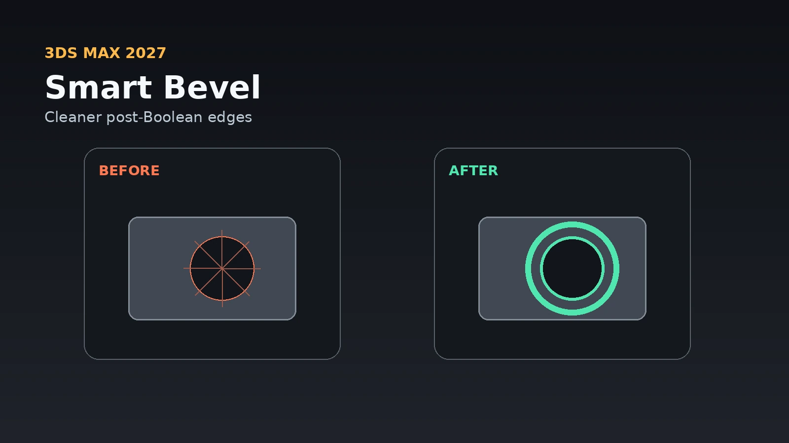
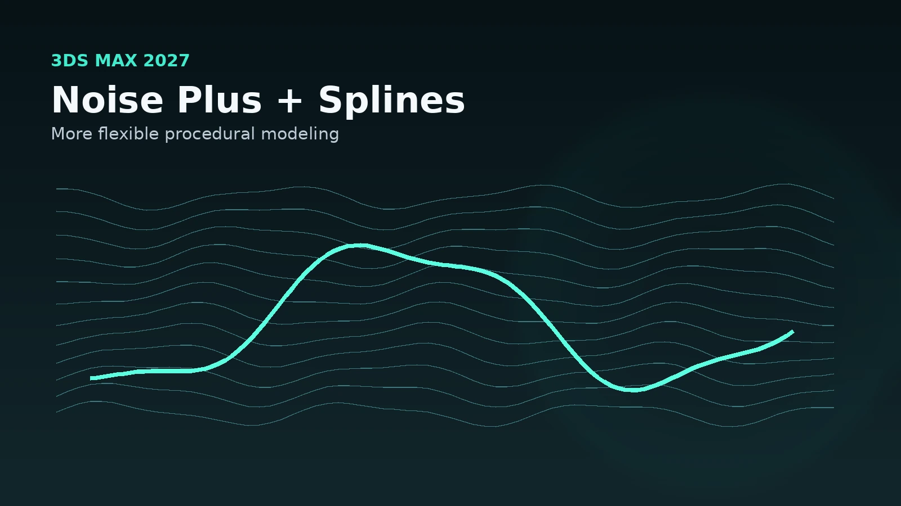

3ds Max 2027 is here, and thankfully the interesting parts are not limited to another round of mysterious backend improvements that make you nod politely before going back to the exact same workflow you used yesterday.
There are several genuinely practical additions in this release, especially for artists working in architectural visualization, product rendering and hard-surface modeling.
Smart Bevel is probably the headline feature, but there are also useful changes to spline extrusion, chamfering, procedural noise, asset handling and even an AI-powered documentation assistant.
None of these suddenly changes what 3ds Max is.
A few of them could change how often you have to wrestle with it.
Smart Bevel is the feature I would test first
Anyone who does hard-surface modeling knows the basic Boolean problem.
Creating the cut is easy.
Making the edge around that cut look like it was actually manufactured instead of attacked with a chainsaw is where things become interesting.
Traditional Chamfer works well when the underlying topology cooperates. Post-Boolean surfaces do not always feel particularly interested in cooperating.
Smart Bevel in 3ds Max 2027 is designed specifically around those post-Boolean intersections.
Instead of being restricted by the existing edge-loop structure, Smart Bevel can create smoother transitions across a surface while remaining non-destructive.
That makes it especially interesting for:
- Furniture hardware - Appliances - Product visualization - Automotive parts - Cabinet components - Fixtures - Mechanical props - Architectural details
This is one of those tools that is easy to dismiss until you remember how much time can disappear while cleaning one stupid little Boolean opening.

Smart Bevel does not replace good modeling
There is an important distinction here.
A smarter bevel tool does not mean topology suddenly stops mattering.
If an object needs to deform, subdivide in a particular way or export cleanly into another pipeline, you still need to understand the geometry underneath it.
But visualization work has plenty of objects that do not need animation-ready topology.
Sometimes the model needs to look fantastic from six feet away and render by Friday.
For those assets, a strong non-destructive Boolean-to-bevel workflow can be extremely valuable.
It lets the modifier stack do more of the work while keeping the original construction editable.
That is exactly where Max tends to be at its best.
Extrude finally gets more directional control
The Extrude modifier also received a deceptively useful upgrade.
Splines can now be extruded using a custom orientation and direction instead of being limited to their local Z axis.
This sounds small.
It also removes one of those annoying situations where the spline itself has to be rotated, transformed or otherwise persuaded into behaving simply because you want the resulting geometry to travel in another direction.
For architectural work, splines are everywhere.
Moldings.
Trim.
Profiles.
Curbs.
Decorative panels.
Railings.
Wall details.
Being able to control the extrusion direction directly makes procedural spline workflows more flexible.
Spline Chamfer gets a fixed-radius option
Spline Chamfer has also been improved with a fixed-radius mode.
That helps produce consistent circular corners instead of having the result vary unexpectedly because of the surrounding spline geometry.
For clean floor plans, furniture profiles and fabricated shapes, predictability matters.
A corner that is supposed to be a 25-millimeter radius should behave like a 25-millimeter radius.
This is not exactly the kind of feature that gets a dramatic launch trailer with an orchestral score.
It is also exactly the kind of feature people end up using constantly.
Noise Plus is much more than another Noise modifier
3ds Max already has Noise.
Noise Plus expands the idea considerably.
Autodesk added additional fractal types along with animation and tiling controls, making it easier to create more varied procedural deformation.
That can be useful for things such as:
- Terrain - Fabric irregularity - Stone - Ground surfaces - Weathering - Organic forms - Water-like motion - Background variation
Procedural tools become particularly valuable when an environment contains many assets that need variation without becoming individually hand-sculpted projects.
The ability to tile procedural deformation is also useful when creating repeating surfaces that still need some controlled irregularity.

Autodesk Assistant arrives inside Max
3ds Max 2027 also introduces Autodesk Assistant as a technology preview.
It is an AI-powered interface designed to answer questions using Autodesk documentation without requiring you to leave the application.
That could be useful, provided it remains grounded in actual documentation instead of developing the confidence level of a guy on a forum who last opened Max in 2009.
The basic idea makes sense.
Instead of searching the web for:
“How do I make this modifier do the weird thing I know it can do but haven’t used since 2017?”
you can ask inside Max and receive information connected to the official documentation.
For experienced artists, this may be most useful with obscure settings rather than everyday operations.
Max contains an enormous number of tools.
Nobody remembers all of them.
Asset Resolver could save some production headaches
Autodesk is also continuing work around asset resolution and path management.
Large visualization projects can become wonderfully creative collections of:
- Textures - Proxies - XRefs - HDRIs - Cache files - Linked assets - Network locations - Render resources
Then somebody moves a folder.
Suddenly the entire production becomes an archaeological investigation.
The Asset Resolver improvements are intended to provide better visibility and control over how paths are mapped and resolved.
It is not glamorous.
Neither is spending forty minutes wondering why seven chairs suddenly became gray.
OpenUSD continues getting deeper integration
Autodesk is also continuing to expand OpenUSD support.
USD becomes increasingly useful as projects move between DCC applications, rendering systems and larger production pipelines.
Most everyday visualization artists probably will not rebuild their entire pipeline around USD tomorrow morning.
But the direction matters.
Scenes are becoming less isolated.
Assets increasingly need to move between Max, Maya, Unreal, rendering tools and collaborative pipelines without being rebuilt every time.
Better USD support gives Max a stronger place inside that kind of workflow.
Should production artists upgrade immediately?
I would treat 3ds Max 2027 the same way I treat any major production release.
Install it.
Test it.
Do not immediately open the one project keeping the lights on and enthusiastically press Save.
Check the things your workflow actually depends on:
- V-Ray or Corona compatibility - Plugins - Scripts - MAXScript tools - Asset libraries - Render farms - Network paths - Custom toolbars - Exporters - Pipeline utilities
A version can have great modeling features and still not be the version you want in production on Monday morning.
That is not exciting advice.
It is considerably more exciting than explaining to somebody why their Friday deadline now involves reinstalling software.
My takeaway from 3ds Max 2027
This release feels strongest when looking at the smaller improvements together.
Smart Bevel could make Boolean-heavy modeling much cleaner.
The Extrude and Spline Chamfer improvements make spline-based modeling more flexible.
Noise Plus gives procedural modeling another useful layer.
Asset Resolver and OpenUSD continue improving the pipeline side of Max.
And Autodesk Assistant is an interesting first step toward having documentation become something you can actually talk to instead of hunt through.
None of that fundamentally changes how a visualization artist works.
It does something arguably more useful.
It removes friction from the workflow that already works.
And in production, saving twenty annoying little steps is often worth more than gaining one enormous feature you use twice a year.
More 3ds Max tips, workflows and production articles are available on the JasonArts blog: https://www.jasonarts.com/blog
Sources
Autodesk — What's New in 3ds Max 2027: https://help.autodesk.com/view/3DSMAX/2027/ENU/?guid=GUID-7CC2F041-F797-4DB9-B2F9-326AAB994F37
Autodesk — What's New in Maya and 3ds Max: https://blogs.autodesk.com/media-and-entertainment/2026/03/25/whats-new-in-maya-and-3ds-max/
Autodesk — 3ds Max Product Details: https://www.autodesk.com/products/3ds-max/product-details